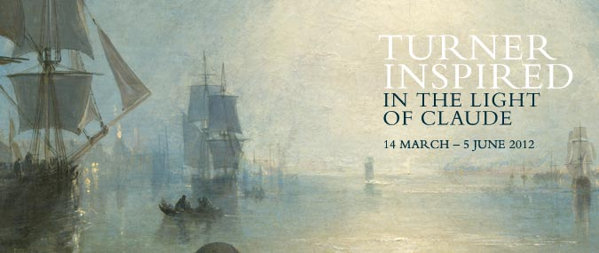

Turner, Monet, Rafael
Nie lada gratkę szykują w tym roku europejskie muzea dla miłośników malarstwa. Turner w londyńskiej National Gallery, Turner, Monet, Twombly w Tate Liverpool oraz późny Rafael w madryckim Prado.
Turner Inspired: In the Light of Claude
Ekspozycja prezentowana w National Gallery uwidacznia wpływ, jaki na J.M.W. Turnera wywarł siedemnastowieczny artysta Claude Lorrain (1604/5—1682). Dzięki zestawieniu dzieł obydwu malarzy (wśród wystawionych prac znalazły się obrazy olejne, akwarele i szkice) łatwo dostrzec inspirację, jaką Turner czerpał z mistrzowskiego potraktowania przez Lorraina światła i pejzażu.
Warto wspomnieć, iż przed śmiercią Turner podarował londyńskiej National Gallery dwa swoje obrazy, zastrzegając jednak, by zawisły one pomiędzy dwoma malowidłami Lorraina.
Tate Liverpool prezentuje prace trzech znamienitych artystów J.M.W. Turnera (1775—1851), Claude’a Moneta (1840—1926) oraz Cy Twombly’ego (1928—2011). Na wystawie będzie można obejrzeć m.in. słynne „Nenufary” Moneta oraz romantyczne pejzaże Turnera. Prace Twombly’ego zostaną pokazane w Wielkiej Brytanii po raz pierwszy.
Ekspozycja zorganizowana przy współudziale Moderna Museet ze Sztokholmu oraz Staatsgalerie Stuttgart.
Miłośników Rafaela zaprasza do Madrytu muzeum Prado, które przygotowuje jedną z największych wystaw tego artysty w historii. W centrum uwagi znajdą się dzieła z późnego okresu jego twórczości. Ekspozycja zostanie następnie zaprezentowana w Luwrze.